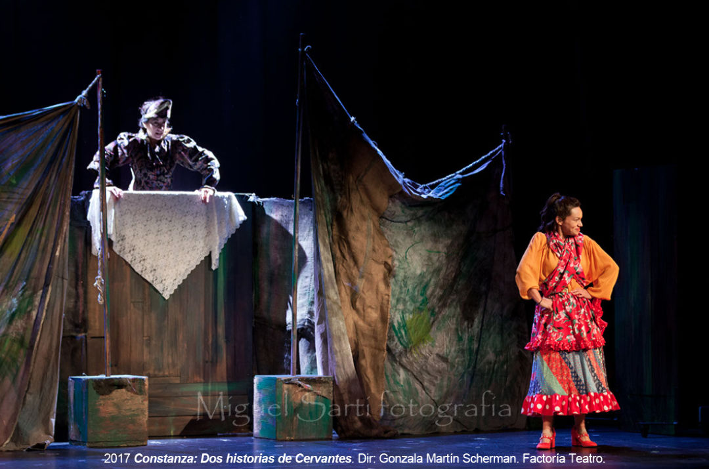
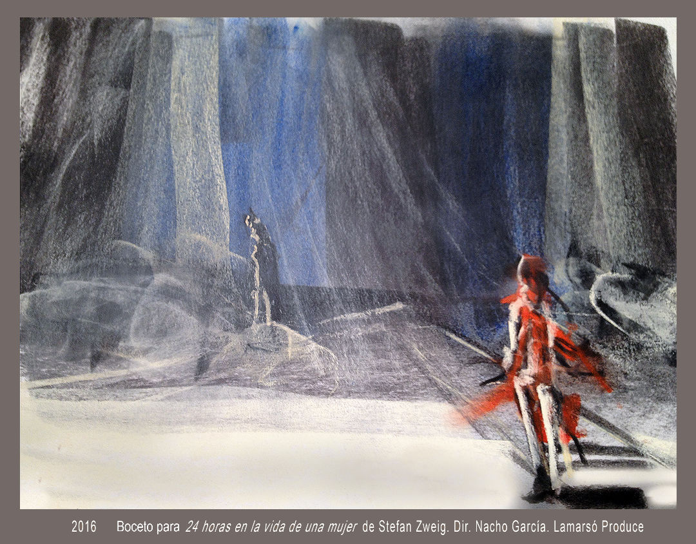
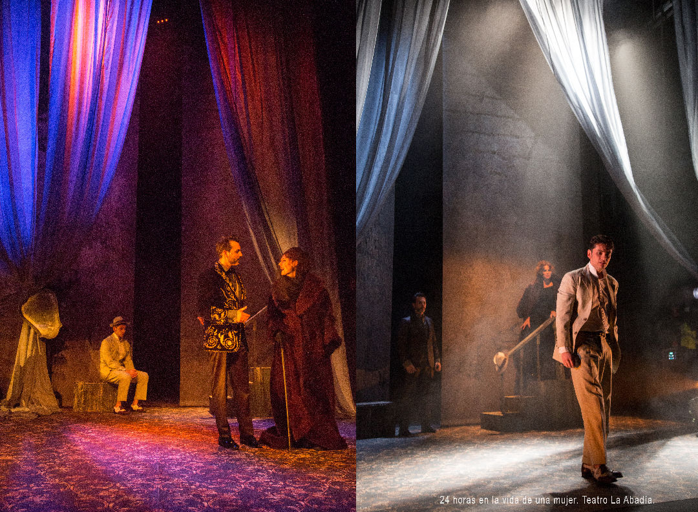
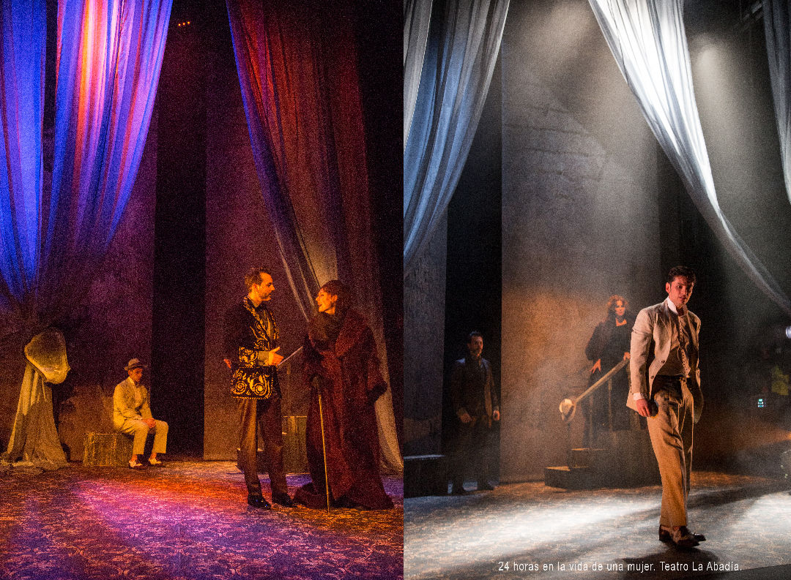

2018 Donde el bosque se espesa de Laila Ripoll y Mariano Llorente. Diseño y realización de escenografía. Teatro Español.

2018 Nerón de Eduardo Galán. Diseño y realización de escenografía. Teatro Romano de Mérida.


2018 Señora de rojo sobre fondo gris de Miguel Delibes. Diseño y realización de escenografía. Teatro Adolfo Marsillach.

2017 Constanza: Dos historias de Cervantes, dir. Gonzala Martín Scherman. Diseño y realización de escenografía. Factoría Teatro.



2016 24 horas en la vida de una mujer de Stefan Zweig. Diseño y realización de escenografía. Teatro La Abadía.


 

2016 La judía de Toledo de Lope de Vega. Diseño y realización de escenografía. Centro Nacional de Teatro Clásico.


2016 Pánico de Mika Myllyaho. de Stefan Zweig. Diseño y realización de escenografía. Teatro Colón, A Coruña.

2014 El Triángulo Azul de Laila Ripoll y Mariano Llorente. Diseño y realización de escenografía. Sala Valle Inclán. CDN.

2014 La Venus de las pieles de David Ives. Diseño de escenografía. Matadero Madrid..


2013 Atra Bilis de Laila Ripoll. Diseño y realización de escenografía. Producciones Micomicón.

2013 La Discreta Enamorada de Lope de Vega. Diseño y realización de escenografía. Factoría Teatro.
2012 La Dama Boba de Lope de Vega. Diseño y realización de escenografía. Producciones Micomicón.

2012 La Isla de Ana María Matute. Diseño y realización de escenografía. Factoría Teatro.

2012 El Burlador de Sevilla de Tirso de Molina. Diseño y realización de escenografía. Factoría Teatro.

2006 Los niños perdidos de Laila Ripoll. Diseño y realización de escenografía. Producciones Micomicón.